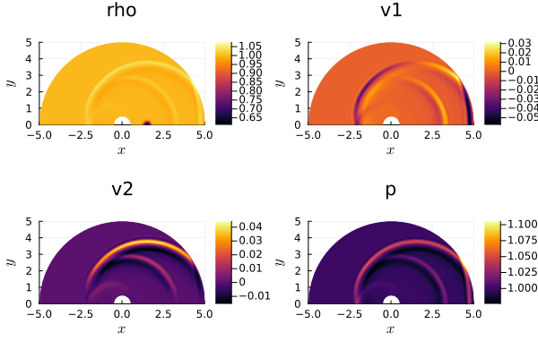
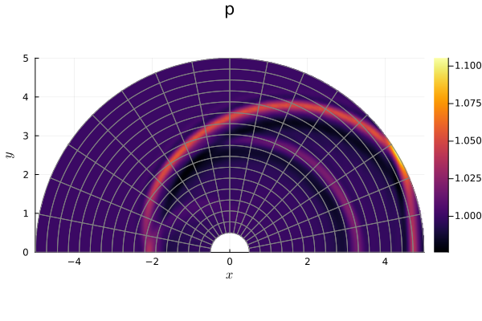
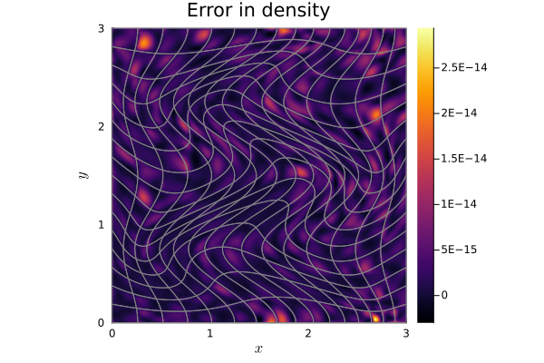

17: Structured mesh with curvilinear mapping


Here, we want to introduce another mesh type of Trixi.jl. More precisely, this tutorial is about the curved mesh type StructuredMesh supporting curved meshes.
Creating a curved mesh
There are two basic options to define a curved StructuredMesh in Trixi.jl. You can implement curves for the domain boundaries, or alternatively, set up directly the complete transformation mapping. We now present one short example each.
Mesh defined by domain boundary curves
Both examples are based on a semdiscretization of the 2D compressible Euler equations.
using OrdinaryDiffEqLowStorageRKusing Trixiequations = CompressibleEulerEquations2D(1.4)┌──────────────────────────────────────────────────────────────────────────────────────────────────┐
│ CompressibleEulerEquations2D │
│ ════════════════════════════ │
│ #variables: ……………………………………………………………… 4 │
│ │ variable 1: ………………………………………………………… rho │
│ │ variable 2: ………………………………………………………… rho_v1 │
│ │ variable 3: ………………………………………………………… rho_v2 │
│ │ variable 4: ………………………………………………………… rho_e_total │
└──────────────────────────────────────────────────────────────────────────────────────────────────┘We start with a pressure perturbation at (xs, 0.0) as initial condition.
function initial_condition_pressure_perturbation(x, t, equations::CompressibleEulerEquations2D) xs = 1.5 # location of the initial disturbance on the x axis w = 1 / 8 # half width p = exp(-log(2) * ((x[1] - xs)^2 + x[2]^2) / w^2) + 1.0 v1 = 0.0 v2 = 0.0 rho = 1.0 return prim2cons(SVector(rho, v1, v2, p), equations)endinitial_condition = initial_condition_pressure_perturbationinitial_condition_pressure_perturbation (generic function with 1 method)Initialize every boundary as a boundary_condition_slip_wall.
boundary_conditions = boundary_condition_slip_wallboundary_condition_slip_wall (generic function with 14 methods)The approximation setup is an entropy-stable split-form DG method with polydeg=4. We are using the two fluxes flux_ranocha and flux_lax_friedrichs.
solver = DGSEM(polydeg = 4, surface_flux = flux_lax_friedrichs, volume_integral = VolumeIntegralFluxDifferencing(flux_ranocha))┌──────────────────────────────────────────────────────────────────────────────────────────────────┐
│ DG{Float64} │
│ ═══════════ │
│ basis: …………………………………………………………………………… LobattoLegendreBasis{Float64}(polydeg=4) │
│ mortar: ………………………………………………………………………… LobattoLegendreMortarL2{Float64}(polydeg=4) │
│ surface integral: ……………………………………………… SurfaceIntegralWeakForm │
│ │ surface flux: …………………………………………………… FluxLaxFriedrichs(max_abs_speed) │
│ volume integral: ………………………………………………… VolumeIntegralFluxDifferencing │
│ │ volume flux: ……………………………………………………… flux_ranocha │
└──────────────────────────────────────────────────────────────────────────────────────────────────┘We want to define a circular cylinder as physical domain. It contains an inner semicircle with radius r0 and an outer semicircle of radius r1.

The domain boundary curves with curve parameter in $[-1,1]$ are sorted as shown in the sketch. They always are orientated from negative to positive coordinate, such that the corners have to fit like this $f_1(+1) = f_4(-1)$, $f_3(+1) = f_2(-1)$, etc.
In our case we can define the domain boundary curves as follows:
r0 = 0.5 # inner radiusr1 = 5.0 # outer radiusf1(xi) = SVector(r0 + 0.5 * (r1 - r0) * (xi + 1), 0.0) # right linef2(xi) = SVector(-r0 - 0.5 * (r1 - r0) * (xi + 1), 0.0) # left linef3(eta) = SVector(r0 * cos(0.5 * pi * (eta + 1)), r0 * sin(0.5 * pi * (eta + 1))) # inner circlef4(eta) = SVector(r1 * cos(0.5 * pi * (eta + 1)), r1 * sin(0.5 * pi * (eta + 1))) # outer circlef4 (generic function with 1 method)We create a curved mesh with 16 x 16 elements. The defined domain boundary curves are passed as a tuple.
cells_per_dimension = (16, 16)mesh = StructuredMesh(cells_per_dimension, (f1, f2, f3, f4), periodicity = false)┌──────────────────────────────────────────────────────────────────────────────────────────────────┐
│ StructuredMesh{2, Float64} │
│ ══════════════════════════ │
│ size: ……………………………………………………………………………… (16, 16) │
│ mapping: ……………………………………………………………………… custom mapping │
└──────────────────────────────────────────────────────────────────────────────────────────────────┘Then, we define the simulation with endtime T=3 with semi, ode and callbacks.
semi = SemidiscretizationHyperbolic(mesh, equations, initial_condition, solver, boundary_conditions = boundary_conditions)tspan = (0.0, 3.0)ode = semidiscretize(semi, tspan)analysis_interval = 100analysis_callback = AnalysisCallback(semi, interval = analysis_interval)alive_callback = AliveCallback(analysis_interval = analysis_interval)stepsize_callback = StepsizeCallback(cfl = 0.9)callbacks = CallbackSet(analysis_callback, alive_callback, stepsize_callback);Running the simulation
sol = solve(ode, CarpenterKennedy2N54(williamson_condition = false); dt = 1, # solve needs some value here but it will be overwritten by the stepsize_callback ode_default_options()..., callback = callbacks);using Plotsplot(sol)
pd = PlotData2D(sol)plot(pd["p"])plot!(getmesh(pd))
Mesh directly defined by the transformation mapping
As mentioned before, you can also define the domain for a StructuredMesh by directly setting up a transformation mapping. Here, we want to present a nice mapping, which is often used to test free-stream preservation. Exact free-stream preservation is a crucial property of any numerical method on curvilinear grids. The mapping is a reduced 2D version of the mapping described in Rueda-Ramírez et al. (2021), p.18.
using OrdinaryDiffEqLowStorageRKusing Trixiequations = CompressibleEulerEquations2D(1.4)┌──────────────────────────────────────────────────────────────────────────────────────────────────┐
│ CompressibleEulerEquations2D │
│ ════════════════════════════ │
│ #variables: ……………………………………………………………… 4 │
│ │ variable 1: ………………………………………………………… rho │
│ │ variable 2: ………………………………………………………… rho_v1 │
│ │ variable 3: ………………………………………………………… rho_v2 │
│ │ variable 4: ………………………………………………………… rho_e_total │
└──────────────────────────────────────────────────────────────────────────────────────────────────┘As mentioned, this mapping is used for testing free-stream preservation. So, we use a constant initial condition.
initial_condition = initial_condition_constantsolver = DGSEM(polydeg = 3, surface_flux = flux_lax_friedrichs)┌──────────────────────────────────────────────────────────────────────────────────────────────────┐
│ DG{Float64} │
│ ═══════════ │
│ basis: …………………………………………………………………………… LobattoLegendreBasis{Float64}(polydeg=3) │
│ mortar: ………………………………………………………………………… LobattoLegendreMortarL2{Float64}(polydeg=3) │
│ surface integral: ……………………………………………… SurfaceIntegralWeakForm │
│ │ surface flux: …………………………………………………… FluxLaxFriedrichs(max_abs_speed) │
│ volume integral: ………………………………………………… VolumeIntegralWeakForm │
└──────────────────────────────────────────────────────────────────────────────────────────────────┘We define the transformation mapping with variables in $[-1, 1]$ as described in Rueda-Ramírez et al. (2021), p.18 (reduced to 2D):
function mapping(xi_, eta_) # Transform input variables between -1 and 1 onto [0,3] xi = 1.5 * xi_ + 1.5 eta = 1.5 * eta_ + 1.5 y = eta + 3 / 8 * (cos(1.5 * pi * (2 * xi - 3) / 3) * cos(0.5 * pi * (2 * eta - 3) / 3)) x = xi + 3 / 8 * (cos(0.5 * pi * (2 * xi - 3) / 3) * cos(2 * pi * (2 * y - 3) / 3)) return SVector(x, y)endmapping (generic function with 1 method)Instead of a tuple of boundary functions, the mesh now has the mapping as its parameter.
cells_per_dimension = (16, 16)mesh = StructuredMesh(cells_per_dimension, mapping, periodicity = true)semi = SemidiscretizationHyperbolic(mesh, equations, initial_condition, solver; boundary_conditions = boundary_condition_periodic)tspan = (0.0, 1.0)ode = semidiscretize(semi, tspan)analysis_callback = AnalysisCallback(semi, interval = 250)stepsize_callback = StepsizeCallback(cfl = 0.8)callbacks = CallbackSet(analysis_callback, stepsize_callback)sol = solve(ode, CarpenterKennedy2N54(williamson_condition = false); dt = 1, # solve needs some value here but it will be overwritten by the stepsize_callback ode_default_options()..., callback = callbacks);
────────────────────────────────────────────────────────────────────────────────────────────────────
Simulation running 'CompressibleEulerEquations2D' with DGSEM(polydeg=3)
────────────────────────────────────────────────────────────────────────────────────────────────────
#timesteps: 0 run time: 9.22000000e-07 s
Δt: 1.00000000e+00 └── GC time: 0.00000000e+00 s (0.000%)
sim. time: 0.00000000e+00 (0.000%) time/DOF/RHS: NaN s
PID: Inf s
#DOFs per field: 4096 alloc'd memory: 1245.049 MiB
#elements: 256 device memory: 0.000 MiB
Variable: rho rho_v1 rho_v2 rho_e_total
L2 error: 7.14879109e-17 1.26068516e-17 2.52137032e-17 1.28610275e-15
Linf error: 2.22044605e-16 2.77555756e-17 5.55111512e-17 3.55271368e-15
∑∂S/∂U ⋅ Uₜ : 6.39244457e-17
────────────────────────────────────────────────────────────────────────────────────────────────────
────────────────────────────────────────────────────────────────────────────────────────────────────
Simulation running 'CompressibleEulerEquations2D' with DGSEM(polydeg=3)
────────────────────────────────────────────────────────────────────────────────────────────────────
#timesteps: 250 run time: 2.25163316e-01 s
Δt: 2.33008558e-03 └── GC time: 0.00000000e+00 s (0.000%)
sim. time: 5.82521395e-01 (58.252%) time/DOF/RHS: 3.94857901e-08 s
PID: 4.37406030e-08 s
#DOFs per field: 4096 alloc'd memory: 1249.688 MiB
#elements: 256 device memory: 0.000 MiB
Variable: rho rho_v1 rho_v2 rho_e_total
L2 error: 2.46288696e-15 1.94075663e-14 2.20848967e-14 1.45480768e-14
Linf error: 2.28705943e-14 2.10359508e-13 2.75057754e-13 2.23820962e-13
∑∂S/∂U ⋅ Uₜ : -9.06891234e-17
────────────────────────────────────────────────────────────────────────────────────────────────────
────────────────────────────────────────────────────────────────────────────────────────────────────
Simulation running 'CompressibleEulerEquations2D' with DGSEM(polydeg=3)
────────────────────────────────────────────────────────────────────────────────────────────────────
#timesteps: 430 run time: 3.87186415e-01 s
Δt: 3.93286656e-04 └── GC time: 0.00000000e+00 s (0.000%)
sim. time: 1.00000000e+00 (100.000%) time/DOF/RHS: 3.93895929e-08 s
PID: 4.36605103e-08 s
#DOFs per field: 4096 alloc'd memory: 1254.397 MiB
#elements: 256 device memory: 0.000 MiB
Variable: rho rho_v1 rho_v2 rho_e_total
L2 error: 3.37312027e-15 2.13096514e-14 2.82739190e-14 1.56203129e-14
Linf error: 2.98649994e-14 2.28830843e-13 3.37979644e-13 2.36255460e-13
∑∂S/∂U ⋅ Uₜ : -5.61175620e-18
────────────────────────────────────────────────────────────────────────────────────────────────────Now, we want to verify the free-stream preservation property and plot the mesh. For the verification, we calculate the absolute difference of the first conservation variable density u[1] and 1.0. To plot this error and the mesh, we are using the visualization feature ScalarPlotData2D, explained in visualization.
error_density = let u = Trixi.wrap_array(sol.u[end], semi) abs.(u[1, :, :, :] .- 1.0) # density, x, y, elementsendpd = ScalarPlotData2D(error_density, semi)using Plotsplot(pd, title = "Error in density")plot!(getmesh(pd))
We observe that the errors in the variable density are at the level of machine accuracy. Moreover, the plot shows the mesh structure resulting from our transformation mapping.
Of course, you can also use other mappings as for instance shifts by $(x, y)$
mapping(xi, eta) = SVector(xi + x, eta + y)or rotations with a rotation matrix $T$
mapping(xi, eta) = T * SVector(xi, eta).For more curved mesh mappings, please have a look at some elixirs for StructuredMesh. For another curved mesh type, there is a tutorial about Trixi.jl's unstructured mesh type [UnstructuredMesh2D] and its use of the High-Order Hex-Quad Mesh (HOHQMesh) generator, created and developed by David Kopriva.
Package versions
These results were obtained using the following versions.
using InteractiveUtilsversioninfo()using PkgPkg.status(["Trixi", "OrdinaryDiffEqLowStorageRK", "Plots"], mode = PKGMODE_MANIFEST)Julia Version 1.10.12
Commit d93beab124c (2026-08-15 10:29 UTC)
Build Info:
Official https://julialang.org/ release
Platform Info:
OS: Linux (x86_64-linux-gnu)
CPU: 4 × AMD EPYC 7763 64-Core Processor
WORD_SIZE: 64
LIBM: libopenlibm
LLVM: libLLVM-15.0.7 (ORCJIT, znver3)
Threads: 1 default, 0 interactive, 1 GC (on 4 virtual cores)
Environment:
JULIA_PKG_SERVER_REGISTRY_PREFERENCE = eager
Status `~/work/Trixi.jl/Trixi.jl/docs/Manifest.toml`
[b0944070] OrdinaryDiffEqLowStorageRK v3.4.0
[91a5bcdd] Plots v1.41.7
[a7f1ee26] Trixi v0.17.6-DEV `~/work/Trixi.jl/Trixi.jl`This page was generated using Literate.jl.